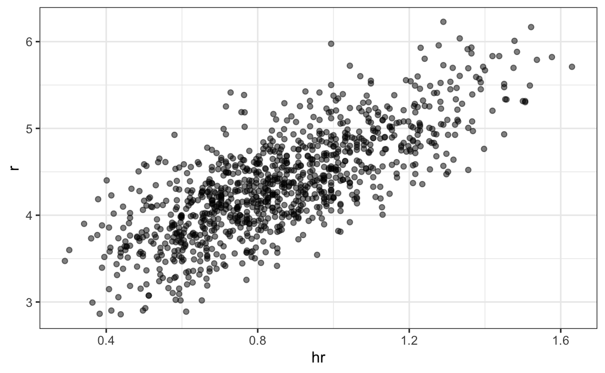
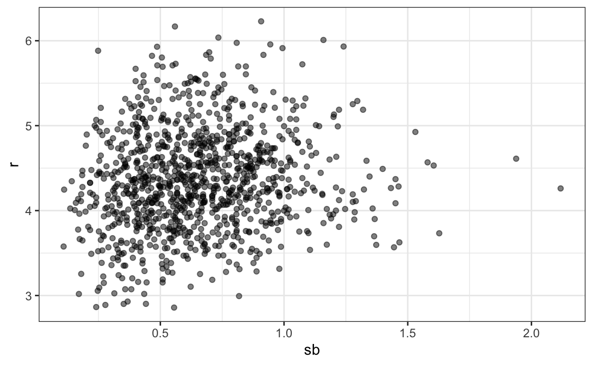
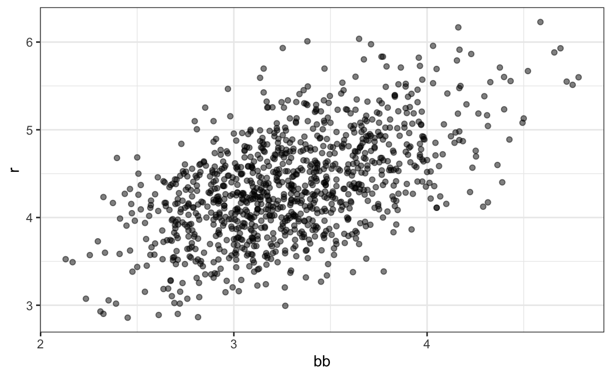
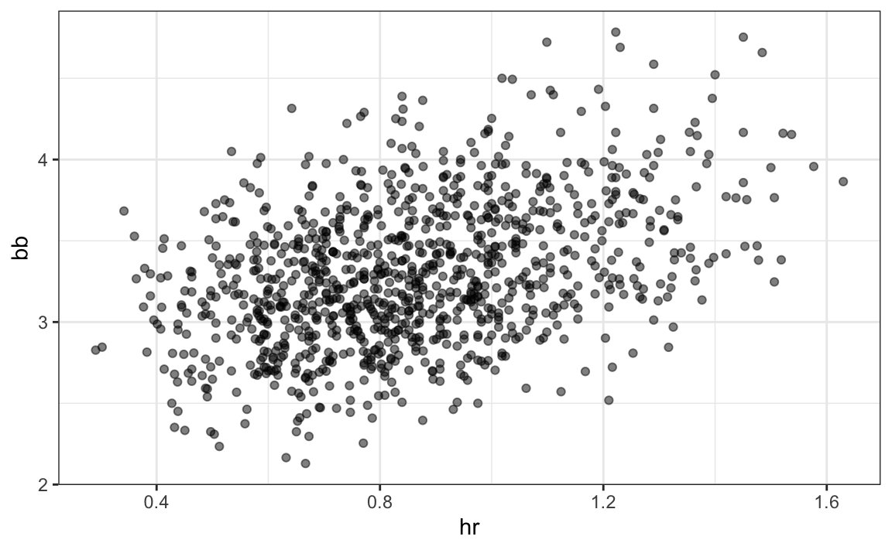
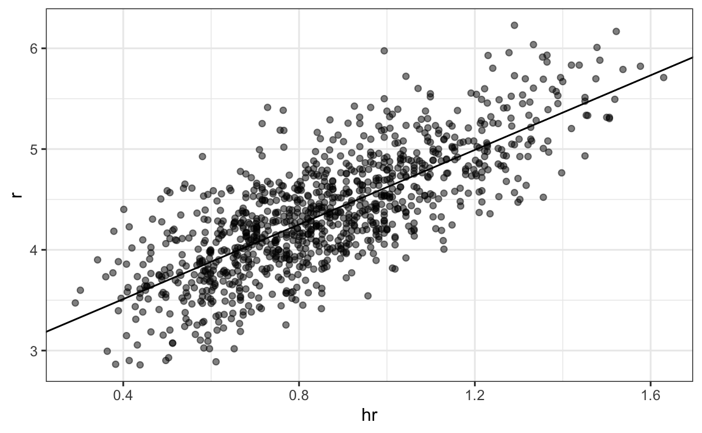
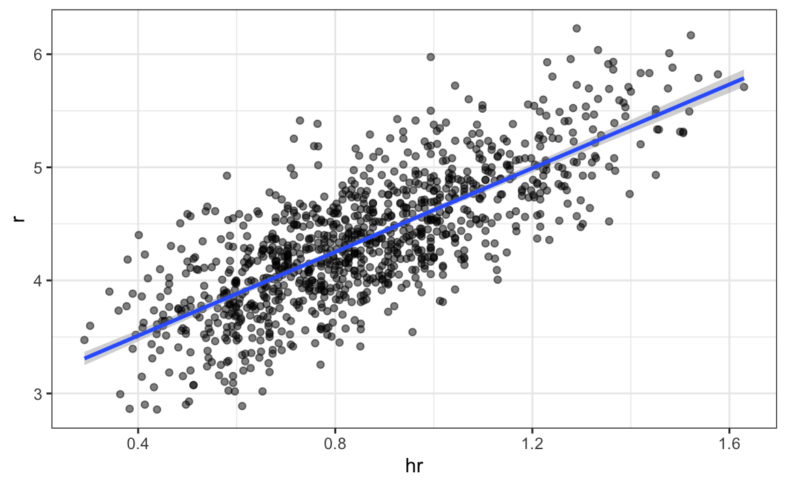
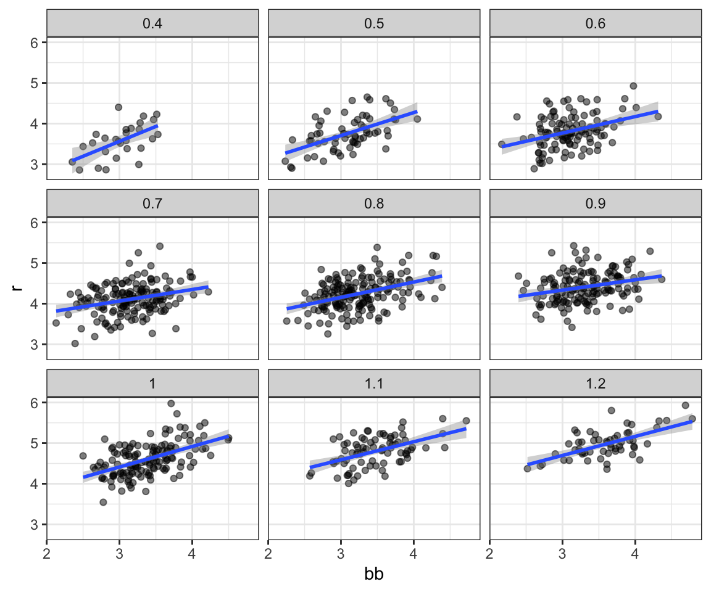
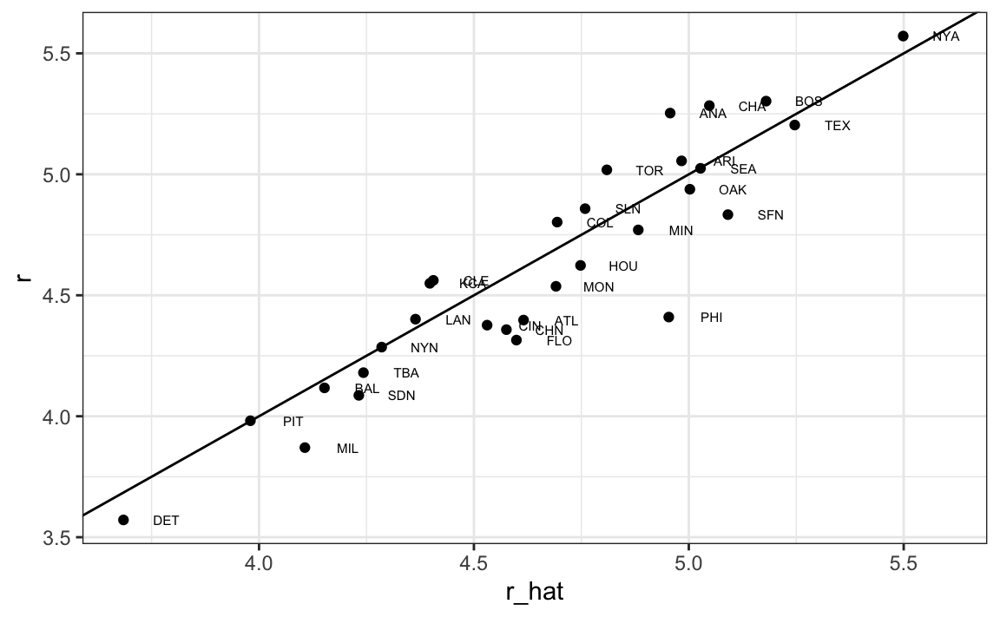
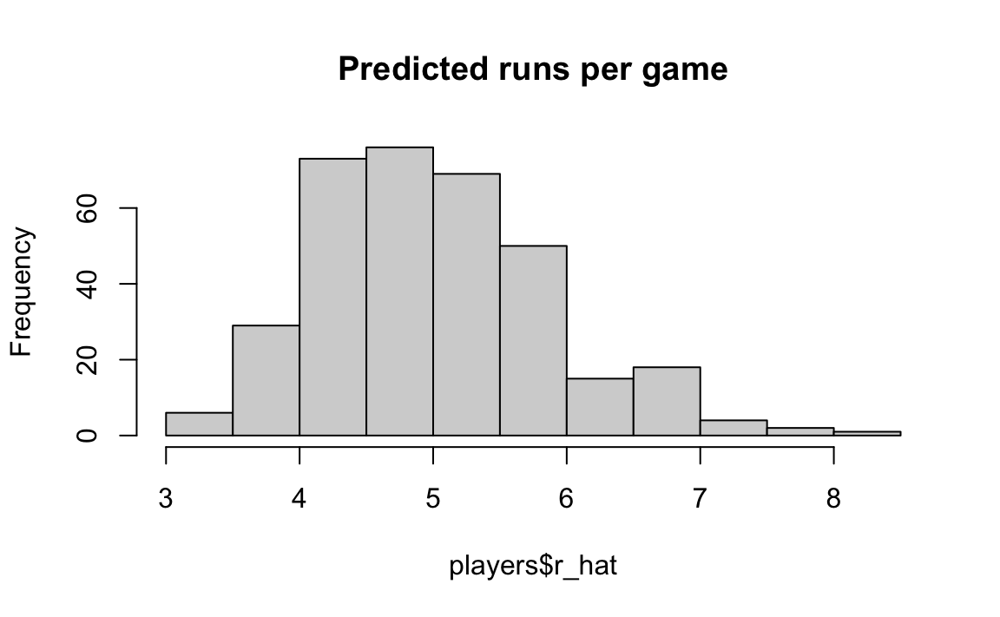

15 Multivariate Regression
Since Galton’s original development, regression has become one of the most widely used tools in data analysis. One reason has to do with the fact that an adaptation of the original regression approach, based on linear models, permits us to find relationships between two variables taking into account the effects of other variables that affect both. This has been particularly popular in fields where randomized experiments are hard to run, such as economics and epidemiology.
When we are not able to randomly assign each individual to a treatment or control group, confounding is particularly prevalent. As an example, consider estimating the effect of eating fast foods on life expectancy using data collected from a random sample of people in a jurisdiction. Fast food consumers are more likely to be smokers, drinkers, and have lower incomes. Therefore, a naive regression model may lead to an overestimate of the negative health effects of fast food. So how do we account for confounding in practice? In this chapter, we learn how multivariate regression can help with such situations and can be used to describe how one or more variables affect an outcome variable. We illustrate with a real-world example in which data was used to help pick underappreciated players to improve a resource limited sports team.
15.1 Case study: Moneyball
Moneyball: The Art of Winning an Unfair Game by Michael Lewis focuses on the Oakland Athletics (A’s) baseball team and its general manager, Billy Beane, the person tasked with building the team.
Traditionally, baseball teams use scouts to help them decide what players to hire. These scouts evaluate players by observing them perform, tending to favor athletic players with observable physical abilities. For this reason, scouts generally agree on who the best players are and, as a result, these players are often in high demand. This in turn drives up their salaries.
From 1989 to 1991, the A’s had one of the highest payrolls in baseball. They were able to buy the best players and, during that time, were one of the best teams. However, in 1995, the A’s team owner changed and the new management cut the budget drastically, leaving then general manager, Sandy Alderson, with one of the lowest payrolls in baseball. He could no longer afford the most sought-after players. As a result, Alderson began using a statistical approach to find inefficiencies in the market. Alderson was a mentor to Billy Beane, who succeeded him in 1998 and fully embraced data science, as opposed to scouts, as a method for finding low-cost players that data predicted would help the team win. Today, this strategy has been adapted by most baseball teams. As we will see, regression plays a large role in this approach.
As motivation for this part of the book, we will pretend it is 2002 and try to build a baseball team with a limited budget, just like the A’s had to do. To appreciate what you are up against, note that in 2002 the Yankees’ payroll of $125,928,583 more than tripled the Oakland A’s $39,679,746:
Statistics have been used in baseball since its beginnings. The dataset we will be using, included in the Lahman library, goes back to the 19th century. For example, a summary statistics we will describe soon, the batting average, has been used for decades to summarize a batter’s success. Other statistics1 such as home runs (HR), runs batted in (RBI), and stolen bases (SB) are reported for each player in the game summaries included in the sports section of newspapers, with players rewarded for high numbers. Although summary statistics such as these were widely used in baseball, data analysis per se was not. These statistics were arbitrarily decided on without much thought as to whether they actually predicted anything or were related to helping a team win.
This changed with Bill James2. In the late 1970s, this aspiring writer and baseball fan started publishing articles describing more in-depth analysis of baseball data. He named the approach of using data to predict what outcomes best predicted if a team would win sabermetrics3. Yet until Billy Beane made sabermetrics the center of his baseball operation, Bill James’ work was mostly ignored by the baseball world. Currently, sabermetrics popularity is no longer limited to just baseball, with other sports also adopting this approach.
To simplify the exercise, we will focus on scoring runs and ignore the two other important aspects of the game: pitching and fielding. We will see how regression analysis can help develop strategies to build a competitive baseball team with a constrained budget. The approach can be divided into two separate data analyses. In the first, we determine which recorded player-specific statistics predict runs. In the second, we examine if players were undervalued based on the predictions from our first analysis.
15.1.1 Baseball basics
To see how regression will help us find undervalued players, we actually don’t need to understand all the details about the game of baseball, which has over 100 rules. Here, we distill the sport to the basic knowledge one needs to know how to effectively attack the data science problem.
The goal of a baseball game is to score more runs (points) than the other team. Each team has 9 batters that have an opportunity to hit a ball with a bat in a predetermined order. After the 9th batter has had their turn, the first batter bats again, then the second, and so on. Each time a batter has an opportunity to bat, we call it a plate appearance (PA). At each PA, the other team’s pitcher throws the ball and the batter tries to hit it. The PA ends with an binary outcome: the batter either makes an out (failure) and returns to the bench, or the batter doesn’t (success) and can run around the bases, potentially scoring a run (reaching all 4 bases). Each team gets nine tries, referred to as innings, to score runs, and each inning ends after three outs (three failures).
Here is a video showing a success: https://www.youtube.com/watch?v=HL-XjMCPfio. And here is one showing a failure: https://www.youtube.com/watch?v=NeloljCx-1g. In these videos, we see how luck is involved in the process. When at bat, the batter wants to hit the ball hard. If the batter hits it hard enough, it is a HR, the best possible outcome as the batter gets at least one automatic run. But sometimes, due to chance, the batter hits the ball very hard and a defender catches it, resulting in an out. In contrast, sometimes the batter hits the ball softly, but it lands just in the right place. The fact that there is chance involved hints at why probability models will be involved.
Now, there are several ways to succeed. Understanding this distinction will be important for our analysis. When the batter hits the ball, the batter wants to pass as many bases as possible. There are four bases, with the fourth one called home plate. Home plate is where batters start by trying to hit, so the bases form a cycle.

(Courtesy of Cburnett4. CC BY-SA 3.0 license5.)
A batter who goes around the bases and arrives home, scores a run.
We are simplifying a bit, but there are five ways a batter can succeed, that is, not make an out:
- Bases on balls (BB) - the pitcher fails to throw the ball through a predefined area considered to be hittable (the strike zone), so the batter is permitted to go to first base.
- Single - Batter hits the ball and gets to first base.
- Double (2B) - Batter hits the ball and gets to second base.
- Triple (3B) - Batter hits the ball and gets to third base.
- Home Run (HR) - Batter hits the ball and goes all the way home and scores a run.
Here is an example of a HR: https://www.youtube.com/watch?v=xYxSZJ9GZ-w. If a batter reaches a base, the batter still has a chance of reaching home and scoring a run if the next batter succeeds with a hit. While the batter is on base, the batter can also try to steal a base (SB). If a batter runs fast enough, the batter can try to advance from one base to the next without the other team tagging the runner. Here is an example of a stolen base: https://www.youtube.com/watch?v=JSE5kfxkzfk.
All these events are tracked throughout the season and are available to us through the Lahman package. Now we will start discussing how data analysis can help us decide how to use these statistics to evaluate players.
15.1.2 No awards for BB
Historically, the batting average has been considered the most important offensive statistic. To define this average, we define a hit (H) and an at bat (AB). Singles, doubles, triples, and home runs are hits. The fifth way to be successful, BB, is not a hit. An AB is the number of times in which you either get a hit or make an out; BBs are excluded. The batting average is simply H/AB and is considered the main measure of a success rate. Today, this success rate ranges from 20% to 38%. We refer to the batting average in thousands so, for example, if your success rate is 28%, we call it batting 280.

(Picture courtesy of Keith Allison6. CC BY-SA 2.0 license7.)
One of Bill James’ first important insights is that the batting average ignores BB, but a BB is a success. Instead of batting average, James proposed the use of the on base percentage (OBP), which he defined as (H+BB)/(AB+BB), or simply the proportion of plate appearances that don’t result in an out, a very intuitive measure. He noted that a player that accumulates many more BB than the average player might go unrecognized if the batter does not excel in batting average. But is this player not helping produce runs? No award is given to the player with the most BB. However, bad habits are hard to break and baseball did not immediately adopt OBP as an important statistic. In contrast, total stolen bases were considered important and an award8 given to the player with the most. But players with high totals of SB also made more outs as they did not always succeed. Does a player with high SB total help produce runs? Can we use data science to determine if it’s better to pay for players with high BB or SB?
15.1.3 Base on balls or stolen bases?
One of the challenges in this analysis is that it is not obvious how to determine if a player produces runs because so much depends on his teammates. Although we keep track of the number of runs scored by a player, remember that if player X bats right before someone who hits many HRs, batter X will score many runs. Note these runs don’t necessarily happen if we hire player X, but not his HR hitting teammate.
However, we can examine team-level statistics. How do teams with many SB compare to teams with few? How about BB? We have data! Let’s examine some. We start by creating a data frame with statistics from 1962 (the first year all teams played 162 games, like today, instead of 154) to 2001 (the year before the year for which we will construct a team). We convert the data to a per game rate, because a small proportion of seasons had less games than usual due to strikes, and some teams played extra games due to tie breakers.
library(tidyverse)
#> ── Attaching core tidyverse packages ──────────────── tidyverse 2.0.0 ──
#> ✔ dplyr 1.1.1 ✔ readr 2.1.4
#> ✔ forcats 1.0.0 ✔ stringr 1.5.0
#> ✔ lubridate 1.9.2 ✔ tibble 3.2.1
#> ✔ purrr 1.0.1 ✔ tidyr 1.3.0
#> ── Conflicts ────────────────────────────────── tidyverse_conflicts() ──
#> ✖ dplyr::filter() masks stats::filter()
#> ✖ dplyr::lag() masks stats::lag()
#> ℹ Use the conflicted package (<http://conflicted.r-lib.org/>) to force all conflicts to become errors
library(Lahman)
dat <- Teams |> filter(yearID %in% 1962:2002) |>
mutate(team = teamID, year = yearID, r = R/G,
singles = (H - X2B - X3B - HR)/G,
doubles = X2B/G, triples = X3B/G, hr = HR/G,
sb = SB/G, bb = BB/G) |>
select(team, year, r, singles, doubles, triples, hr, sb, bb)Now let’s start with a obvious question: do teams that hit more home runs score more runs? When exploring the relationship between two variables, The visualization of choice is a scatterplot:
p <- dat |> ggplot(aes(hr, r)) + geom_point(alpha = 0.5)
p 
We defined p because we will add it to this plot latter. The plot shows a strong association: teams with more HRs tend to score more runs. Now let’s examine the relationship between stolen bases and runs:
dat |> ggplot(aes(sb, r)) + geom_point(alpha = 0.5)
Here the relationship is not as clear. Finally, let’s examine the relationship between BB and runs:
dat |> ggplot(aes(bb, r)) + geom_point(alpha = 0.5)
Here again we see a clear association. But does this mean that increasing a team’s BBs causes an increase in runs? One of the most important lessons you learn in this book is that association is not causation. In fact, it looks like BBs and HRs are also associated:
dat |> ggplot(aes(hr, bb)) + geom_point(alpha = 0.5)
We know that HRs cause runs because when a player hits a HR, they are guaranteed at least one run. Could it be that HRs also cause BB and this makes it appear as if BB cause runs? When this happens, we say there is confounding, an important concept we will learn more about throughout this section.
Linear regression will help us parse out the information and quantify the associations. This, in turn, will aid us in determining what players to recruit. Specifically, we will try to predict things like how many more runs will a team score if we increase the number of BBs, but keep the HRs fixed? Regression will help us answer questions like this one.
15.1.4 Regression applied to baseball statistics
Can we use regression with these data? First, notice that the HR and Run data, shown above, appear to be bivariate normal. Specifically, the qq-plots confirm that the normal approximation for each HR strata is useful here:
dat |> mutate(z_hr = round(scale(hr))) |>
filter(z_hr %in% -2:3) |>
ggplot() +
stat_qq(aes(sample = r)) +
facet_wrap(~z_hr) 
Now we are ready to use linear regression to predict the number of runs a team will score, if we know how many home runs the team hits using regression:
hr_fit <- lm(r ~ hr, data = dat)$coef
p + geom_abline(intercept = hr_fit[[1]], slope = hr_fit[[2]])
Note that we can obtain the same plot more quickly by using the ggplot2 function geom_smooth, which computes and adds a regression line to plot along with confidence intervals. We use the argument method = "lm", which stands for linear model, the title of an upcoming section. We simplify the code above like this:
p + geom_smooth(method = "lm")
In the example above, the slope is 1.8517449. This tells us that teams that hit 1 more HR per game than the average team, score 1.8517449 more runs per game than the average team. Given that the most common final score is a difference of one run, this can certainly lead to a large increase in wins. Not surprisingly, HR hitters are very expensive. Because we are working on a budget, we will need to find some other way to increase wins. In the next chapter, we introduce linear models, which provide an framework for performing this analysis. In @ref{@moneyball}, we apply what have learned to build a baseball team.
15.2 The broom package
The broom package facilitates the use of R function, such as lm, within the tidyverse. Recall the that lm does not take a data frame as a first argument and does not return a data frame, which makes using lm in conjunction with the tidyverse difficult. It has three main functions, all of which extract information from the object returned by lm and returns it in a tidyverse friendly data frame. These functions are: tidy, glance, and augment. The tidy function returns estimates and related information as a data frame:
We can add other important summaries, such as confidence intervals:
tidy(fit, conf.int = TRUE)
#> # A tibble: 2 × 7
#> term estimate std.error statistic p.value conf.low conf.high
#> <chr> <dbl> <dbl> <dbl> <dbl> <dbl> <dbl>
#> 1 (Intercept) 1.93 0.116 16.7 1.91e-55 1.70 2.15
#> 2 bb 0.739 0.0348 21.2 1.90e-83 0.671 0.807Given that the outcome is a data frame, we can immediately use it with summarize to string together the commands that produce the table we are after. Because a data frame is returned, we can filter and select the rows and columns we want, as we will see in the next section.
Now we return to discussing our original task of determining if slopes changed. The plot we just made, using summarize and tidy, shows that the confidence intervals overlap, which provides a nice visual confirmation that our assumption that the slope does not change is safe.
The other functions provided by broom, glance and augment, relate to model-specific and observation-specific outcomes, respectively.
15.3 Confounding
Previously, we noted a strong relationship between Runs and BB. If we find the regression line for predicting runs from bases on balls, we a get slope of:
bb_slope <- lm(r ~ bb, data = dat)$coef[2]
bb_slope
#> bb
#> 0.739Does this mean that if we go and hire low salary players with many BB, and who therefore increase the number of walks per game by 2, our team will score 1.5 more runs per game?
We are again reminded that association is not causation. The data does provide strong evidence that a team with two more BB per game than the average team, scores 1.5 runs per game. But this does not mean that BB are the cause.
Note that, if we compute the regression line slope for singles, we get:
lm(r ~ singles, data = dat)$coef[2]
#> singles
#> 0.432which is a lower value than what we obtain for BB. Remember that a single gets you to first base just like a BB. Baseball fans will point out that with a single, runners on base have a better chance of scoring than with a BB. So how can BB be more predictive of runs? The reason is because of confounding. Here we show the correlation between HR, BB, and singles:
It appears that pitchers, afraid of HRs, will sometimes avoid throwing strikes to HR hitters. As a result, HR hitters tend to have more BBs, and a team with many HRs will also have more BBs. Although it may appear that BBs cause runs, it is actually the HRs that cause most of these runs. We say that BBs are confounded with HRs. Nonetheless, could it be that BBs still help? To find out, we somehow have to adjust for the HR effect. Regression can help with this as well.
15.3.1 Understanding confounding through stratification
A first approach is to keep HRs fixed at a certain value and then examine the relationship between BB and runs. As we did when we stratified fathers by rounding to the closest inch, here we can stratify HR per game to the closest ten. We filter out the strata with few points to avoid highly variable estimates and then make a scatterplot for each strata:
dat |> mutate(hr_strata = round(hr, 1)) |>
filter(hr_strata >= 0.4 & hr_strata <= 1.2) |>
ggplot(aes(bb, r)) +
geom_point(alpha = 0.5) +
geom_smooth(method = "lm") +
facet_wrap(~hr_strata) 
Remember that the regression slope for predicting runs with BB was 0.7. Once we stratify by HR, these slopes are substantially reduced:
dat |> mutate(hr_strata = round(hr, 1)) |>
filter(hr_strata >= 0.5 & hr_strata <= 1.2) |>
group_by(hr_strata) |>
reframe(tidy(lm(r ~ bb))) |>
filter(term == "bb")
#> # A tibble: 8 × 6
#> hr_strata term estimate std.error statistic p.value
#> <dbl> <chr> <dbl> <dbl> <dbl> <dbl>
#> 1 0.5 bb 0.566 0.110 5.14 0.00000302
#> 2 0.6 bb 0.405 0.0984 4.12 0.0000746
#> 3 0.7 bb 0.284 0.0717 3.96 0.000113
#> 4 0.8 bb 0.378 0.0638 5.92 0.0000000175
#> 5 0.9 bb 0.254 0.0762 3.33 0.00108
#> # ℹ 3 more rowsNote we use reframe instead of summarize because tidy returns a data frame with two rows.
The slopes are reduced, but they are not 0, which indicates that BBs are helpful for producing runs, just not as much as previously thought. In fact, the values above are closer to the slope we obtained from singles, 0.4, which is more consistent with our intuition. Since both singles and BB get us to first base, they should have about the same predictive power.
Although our understanding of the application tells us that HR cause BB, but not the other way around, we can still check if stratifying by BB makes the effect of BB go down. To do this, we use the same code except that we swap HR and BBs. In this case, the slopes do not change much from the original:
dat |> mutate(bb_strata = round(bb, 1)) |>
filter(bb_strata >= 3 & bb_strata <= 4) |>
group_by(bb_strata) |>
reframe(tidy(lm(r ~ hr))) |>
filter(term == "hr")
#> # A tibble: 11 × 6
#> bb_strata term estimate std.error statistic p.value
#> <dbl> <chr> <dbl> <dbl> <dbl> <dbl>
#> 1 3 hr 1.51 0.182 8.31 1.47e-12
#> 2 3.1 hr 1.49 0.168 8.87 3.10e-14
#> 3 3.2 hr 1.61 0.150 10.8 6.96e-18
#> 4 3.3 hr 1.57 0.167 9.39 5.73e-15
#> 5 3.4 hr 1.55 0.153 10.1 3.77e-16
#> # ℹ 6 more rowsThey are reduced slightly from 1.8517449, which is consistent with the fact that BB do in fact cause some runs.
Regardless, it seems that if we stratify by HR, we have bivariate distributions for runs versus BB. Similarly, if we stratify by BB, we have approximate bivariate normal distributions for HR versus runs.
15.4 Multivariable regression
It is somewhat complex to be computing regression lines for each strata. We are essentially fitting models like this:
\[ \mbox{E}[R \mid BB = x_1, \, HR = x_2] = \beta_0 + \beta_1(x_2) x_1 + \beta_2(x_1) x_2 \]
with the slopes for \(x_1\) changing for different values of \(x_2\) and vice versa. But is there an easier approach?
If we take random variability into account, the slopes in the strata don’t appear to change much. If these slopes are in fact the same, this implies that \(\beta_1(x_2)\) and \(\beta_2(x_1)\) are constants. This, in turn, implies that the expectation of runs conditioned on HR and BB can be written as follows:
\[ \mbox{E}[R \mid BB = x_1, \, HR = x_2] = \beta_0 + \beta_1 x_1 + \beta_2 x_2 \]
This model suggests that, if the number of HR is fixed at \(x_2\), we observe a linear relationship between runs and BB with an intercept of \(\beta_0 + \beta_2 x_2\). Our exploratory data analysis suggested that this is the case. The model also suggests that as the number of HR grows, the intercept growth is linear as well and determined by \(\beta_1\). In this analysis, referred to as multivariable regression, you will often hear people say that the BB slope \(\beta_1\) is adjusted for the HR effect.
Because the data is approximately normal and conditional distributions were also normal, we are justified in using a linear model:
\[ Y_i = \beta_0 + \beta_1 x_{i,1} + \beta_2 x_{i,2} + \varepsilon_i \]
with \(Y_i\) runs per game for team \(i\), \(x_{i,1}\) walks per game, and \(x_{i,2}\). To use lm here, we need to let the function know we have two predictor variables. We therefore use the + symbol as follows:
tidy(lm(r ~ bb + hr, data = dat), conf.int = TRUE)
#> # A tibble: 3 × 7
#> term estimate std.error statistic p.value conf.low conf.high
#> <chr> <dbl> <dbl> <dbl> <dbl> <dbl> <dbl>
#> 1 (Intercept) 1.74 0.0820 21.2 3.38e- 83 1.58 1.90
#> 2 bb 0.387 0.0269 14.4 8.41e- 43 0.334 0.440
#> 3 hr 1.57 0.0488 32.1 1.39e-157 1.47 1.66When we fit the model with only one variable, the estimated slopes were 0.7388725 and 1.8517449 for BB and HR, respectively. Note that when fitting the multivariable model both go down, with the BB effect decreasing much more.
You are ready to do exercises 1-12, if you want to practice before continuing.
15.4.1 Building a baseball team
Now we want to construct a metric to pick players, and we need to consider singles, doubles, and triples as well. Can we build a model that predicts runs based on all these outcomes? We take somewhat of a “leap of faith” and assume that these five variables are jointly normal. This means that, if we pick any one of them and hold the other four fixed, the relationship with the outcome is linear and the slope does not depend on the four values held constant. If this is true, then a linear model for our data is:
\[ Y_i = \beta_0 + \beta_1 x_{i,1} + \beta_2 x_{i,2} + \beta_3 x_{i,3}+ \beta_4 x_{i,4} + \beta_5 x_{i,5} + \varepsilon_i \]
with \(x_{i,1}, x_{i,2}, x_{i,3}, x_{i,4}, x_{i,5}\) representing BB, singles, doubles, triples, and HR respectively.
Using lm, we can quickly find the LSE for the parameters using:
Be aware that we fit the model to data up until 2001, the year before we will construct our team. We can see the coefficients using tidy:
tidy(fit, conf.int = TRUE) |> filter(term != "(Intercept)")
#> # A tibble: 5 × 7
#> term estimate std.error statistic p.value conf.low conf.high
#> <chr> <dbl> <dbl> <dbl> <dbl> <dbl> <dbl>
#> 1 bb 0.370 0.0119 31.2 1.00e-149 0.347 0.393
#> 2 singles 0.517 0.0128 40.5 5.29e-213 0.492 0.543
#> 3 doubles 0.775 0.0229 33.8 7.09e-168 0.730 0.820
#> 4 triples 1.24 0.0778 15.9 4.62e- 51 1.09 1.39
#> 5 hr 1.44 0.0248 58.1 1.98e-323 1.39 1.49To see how well our metric actually predicts runs, we can predict the number of runs for each team in 2002 using the function predict, then make a plot:
dat |> mutate(r_hat = predict(fit, newdata = dat)) |>
filter(year == 2002) %>%
ggplot(aes(r_hat, r, label = team)) +
geom_point() +
geom_text(nudge_x = 0.1, cex = 2) +
geom_abline()
Our model does quite a good job, as demonstrated by the fact that points from the observed versus predicted plot fall close to the identity line.
So instead of using batting average, or just number of HR, as a measure of picking players, we can use our fitted model to form a metric that relates more directly to run production. Specifically, to define a metric for player A, we imagine a team made up of players just like player A, and use our fitted regression model to predict how many runs this team would produce. The formula would look like this: -2.7580763 + 0.3699921 \(\times\) BB + 0.5174284 \(\times\) singles + 0.7750757 \(\times\) doubles + 1.2387738 \(\times\) triples + 1.4419724 \(\times\) HR.
To define a player-specific metric, we have a bit more work to do. A challenge here is that we derived the metric for teams, based on team-level summary statistics. For example, the HR value that is entered into the equation is HR per game for the entire team. If we compute the HR per game for a player, it will be much lower since the total is accumulated by 9 batters. Furthermore, if a player only plays part of the game and gets fewer opportunities than average, it is still considered a game played. For players, a rate that takes into account opportunities is the per-plate-appearance rate.
To make the per-game team rate comparable to the per-plate-appearance player rate, we compute the average number of team plate appearances per game:
We compute the per-plate-appearance rates for players available in 2002 on data from 1997-2001. To avoid small sample artifacts, we filter players with less than 1,000 plate appearances per year. Here is the entire calculation in one line:
players <- Batting |>
filter(yearID %in% 1997:2001) |>
group_by(playerID) |>
mutate(pa = BB + AB) |>
summarize(g = sum(pa)/pa_per_game,
bb = sum(BB)/g,
singles = sum(H - X2B - X3B - HR)/g,
doubles = sum(X2B)/g,
triples = sum(X3B)/g,
hr = sum(HR)/g,
avg = sum(H)/sum(AB),
pa = sum(pa)) |>
filter(pa >= 1000) |>
select(-g)
players$r_hat = predict(fit, newdata = players)The player-specific predicted runs computed here can be interpreted as the number of runs we predict a team will score if all batters are exactly like that player. The distribution shows that there is wide variability across players:
hist(players$r_hat, main = "Predicted runs per game")
To actually build the team, we will need to know their salaries as well as their defensive position. For this, we use the righ_join function to combine the players data frame we just created with the player information data frame included in some of the other Lahman data tables.
Start by adding the 2002 salary of each player:
players <- Salaries |>
filter(yearID == 2002) |>
select(playerID, salary) |>
right_join(players, by = "playerID")Next, we add their defensive position. This is a somewhat complicated task because players play more than one position each year. The Lahman package table Appearances specifies how many games each player played in each position, allowing us to pick the position that was most played using which.max on each row. We use apply to do this. However, as some players are traded and appear more than once on the table, we first sum their appearances across teams. Here, we pick the one position the player most played using the top_n function. To make sure we only pick one position, in the case of ties, we pick the first row of the resulting data frame. We also remove the OF position which stands for outfielder, a generalization of three positions: left field (LF), center field (CF), and right field (RF). We also remove pitchers since they don’t bat in the league where the A’s play.
position_names <-
paste0("G_", c("p","c","1b","2b","3b","ss","lf","cf","rf", "dh"))
tmp <- Appearances |>
filter(yearID == 2002) |>
group_by(playerID) |>
summarize_at(position_names, sum) |>
ungroup()
pos <- tmp |>
select(all_of(position_names)) |>
apply(X = _, 1, which.max)
players <- tibble(playerID = tmp$playerID, POS = position_names[pos]) |>
mutate(POS = str_to_upper(str_remove(POS, "G_"))) |>
filter(POS != "P") |>
right_join(players, by = "playerID") |>
filter(!is.na(POS) & !is.na(salary))Finally, we add their first and last name:
players <- People |>
select(playerID, nameFirst, nameLast, debut) |>
mutate(debut = as.Date(debut)) |>
right_join(players, by = "playerID")If you are a baseball fan, you will recognize the top 10 players:
players |> select(nameFirst, nameLast, POS, salary, r_hat) |> arrange(desc(r_hat)) |> head(10)
#> nameFirst nameLast POS salary r_hat
#> 1 Barry Bonds LF 15000000 8.05
#> 2 Larry Walker RF 12666667 7.96
#> 3 Todd Helton 1B 5000000 7.40
#> 4 Manny Ramirez LF 15462727 7.35
#> 5 Sammy Sosa RF 15000000 7.20
#> 6 Jeff Bagwell 1B 11000000 7.05
#> 7 Mike Piazza C 10571429 6.99
#> 8 Jason Giambi 1B 10428571 6.92
#> 9 Edgar Martinez DH 7086668 6.91
#> 10 Jim Thome 1B 8000000 6.89On average, players with a higher metric have higher salaries:
players |> ggplot(aes(salary, r_hat, color = POS)) +
geom_point() +
scale_x_log10()
We can search for good deals by looking at players who generate many more runs than others with similar salaries. We can use this table to decide what players to pick while keeping our total salary below the 40 million dollar budget Billy Beane had to work with. This can be done using what computer scientists call linear programming. This is not something we teach, although here are the position players selected with this approach:
| nameFirst | nameLast | POS | salary | r_hat |
|---|---|---|---|---|
| Todd | Helton | 1B | 5000000 | 7.40 |
| Mike | Piazza | C | 10571429 | 6.99 |
| Edgar | Martinez | DH | 7086668 | 6.91 |
| Jim | Edmonds | CF | 7333333 | 6.23 |
| Jeff | Kent | 2B | 6000000 | 6.08 |
| Phil | Nevin | 3B | 2600000 | 5.86 |
| Matt | Stairs | RF | 500000 | 5.76 |
| Henry | Rodriguez | LF | 300000 | 5.64 |
| John | Valentin | SS | 550000 | 5.00 |
We see that all these players have above average BB and most have above average HR rates, while the same is not true for singles and batting average. Below is a table with statistics standardized across players so that, for example, above average HR hitters have values above 0:
| nameLast | bb | singles | doubles | triples | hr | avg | r_hat |
|---|---|---|---|---|---|---|---|
| Helton | 0.909 | -0.215 | 2.649 | -0.311 | 1.522 | 2.670 | 2.542 |
| Piazza | 0.328 | 0.423 | 0.204 | -1.418 | 1.825 | 2.199 | 2.093 |
| Martinez | 2.135 | -0.005 | 1.265 | -1.224 | 0.808 | 2.203 | 2.004 |
| Edmonds | 1.071 | -0.558 | 0.791 | -1.152 | 0.973 | 0.854 | 1.259 |
| Kent | 0.232 | -0.732 | 2.011 | 0.448 | 0.766 | 0.787 | 1.093 |
| Nevin | 0.307 | -0.905 | 0.479 | -1.191 | 1.193 | 0.105 | 0.850 |
| Stairs | 1.100 | -1.513 | -0.046 | -1.129 | 1.121 | -0.561 | 0.742 |
| Rodriguez | 0.201 | -1.596 | 0.332 | -0.782 | 1.320 | -0.672 | 0.613 |
| Valentin | 0.180 | -0.929 | 1.794 | -0.435 | -0.045 | -0.472 | -0.088 |
15.5 Exercises
We have shown how BB and singles have similar predictive power for scoring runs. Another way to compare the usefulness of these baseball metrics is by assessing their stability across the years. Since we have to pick players based on their previous performances, we prefer metrics that are more stable. In these exercises, we will compare the stability of singles and BBs.
1. Before we begin, we want to generate two tables. One for 2002 and another for the average of 1999-2001 seasons. We want to define per plate appearance statistics. Here is how we create the 2017 table, keeping only players with more than 100 plate appearances:
Now, compute a similar table, but with rates computed over 1999-2001.
2. You can use the inner_join function to combine the 2001 data and averages in the same table:
dat <- inner_join(dat, avg, by = "playerID")Compute the correlation between 2002 and the previous seasons for singles and BB.
3. Note that the correlation is higher for BB. To quickly get an idea of the uncertainty associated with this correlation estimate, we will fit a linear model and compute confidence intervals for the slope coefficient. However, first make scatterplots to confirm that fitting a linear model is appropriate.
4. Now fit a linear model for each metric and use the confint function to compare the estimates.
5. In a previous section, we computed the correlation between mothers and daughters, mothers and sons, fathers and daughters, and fathers and sons. We noticed that the highest correlation is between fathers and sons and the lowest is between mothers and sons. We can compute these correlations using:
library(HistData)
set.seed(1)
galton_heights <- GaltonFamilies |>
group_by(family, gender) |>
sample_n(1) |>
ungroup()
cors <- galton_heights |>
pivot_longer(father:mother, names_to = "parent", values_to = "parentHeight") |>
mutate(child = ifelse(gender == "female", "daughter", "son")) |>
unite(pair, c("parent", "child")) |>
group_by(pair) |>
summarize(cor = cor(parentHeight, childHeight))Are these differences statistically significant? To answer this, we will compute the slopes of the regression line along with their standard errors. Start by using lm and the broom package to compute the slopes LSE and the standard errors.
6. Repeat the exercise above, but compute a confidence interval as well.
7. Plot the confidence intervals and notice that they overlap, which implies that the data is consistent with the inheritance of height being independent of sex.
8. Because we are selecting children at random, we can actually do something like a permutation test here. Repeat the computation of correlations 100 times taking a different sample each time. Hint: use similar code to what we used with simulations.
9. Fit a linear regression model to obtain the effects of BB and HR on Runs (at the team level) in 1971. Use the tidy function in the broom package to obtain the results in a data frame.
10. Now let’s repeat the above for each year since 1962 and make a plot. Use summarize and the broom package to fit this model for every year since 1962.
11. Use the results of the previous exercise to plot the estimated effects of BB on runs.
12. Advanced. Write a function that takes R, HR, and BB as arguments and fits two linear models: R ~ BB and R~BB+HR. Then use the summary function to obtain the BB for both models for each year since 1962. Then plot these against each other as a function of time.
13. Since the 1980s, sabermetricians have used a summary statistic different from batting average to evaluate players. They realized walks were important and that doubles, triples, and HRs, should be weighed more than singles. As a result, they proposed the following metric:
\[ \frac{\mbox{BB}}{\mbox{PA}} + \frac{\mbox{Singles} + 2 \mbox{Doubles} + 3 \mbox{Triples} + 4\mbox{HR}}{\mbox{AB}} \]
They called this on-base-percentage plus slugging percentage (OPS). Although the sabermetricians probably did not use regression, here we demonstrate how this metric closely aligns with regression results.
Compute the OPS for each team in the 2001 season. Then plot Runs per game versus OPS.
14. For every year since 1962, compute the correlation between runs per game and OPS. Then plot these correlations as a function of year.
15. Keep in mind that we can rewrite OPS as a weighted average of BBs, singles, doubles, triples, and HRs. We know that the weights for doubles, triples, and HRs are 2, 3, and 4 times that of singles. But what about BB? What is the weight for BB relative to singles? Hint: the weight for BB relative to singles will be a function of AB and PA.
16. Consider that the weight for BB, \(\frac{\mbox{AB}}{\mbox{PA}}\), will change from team to team. To assess its variability, compute and plot this quantity for each team for each year since 1962. Then plot it again, but instead of computing it for every team, compute and plot the ratio for the entire year. Then, once you are convinced that there is not much of a time or team trend, report the overall average.
17. So now we know that the formula for OPS is proportional to \(0.91 \times \mbox{BB} + \mbox{singles} + 2 \times \mbox{doubles} + 3 \times \mbox{triples} + 4 \times \mbox{HR}\). Let’s see how these coefficients compare to those obtained with regression. Fit a regression model to the data after 1962, as done earlier: using per game statistics for each year for each team. After fitting this model, report the coefficients as weights relative to the coefficient for singles.
18. We see that our linear regression model coefficients follow the same general trend as those used by OPS, but with slightly less weight for metrics other than singles. For each team in years after 1962, compute the OPS, the predicted runs with the regression model, and compute the correlation between the two, as well as the correlation with runs per game.
19. We see that using the regression approach predicts runs slightly better than OPS, but not that much. However, note that we have been computing OPS and predicting runs for teams when these measures are used to evaluate players. Let’s show that OPS is quite similar to what one obtains with regression at the player level. For the 1962 season and onward, compute the OPS and the predicted runs from our model for each player, and plot them. Use the PA per game correction we used in the previous chapter:
20. Which players have shown the largest difference between their rank by predicted runs and OPS?
http://mlb.mlb.com/stats/league_leaders.jsp↩︎
https://en.wikipedia.org/wiki/Bill_James↩︎
https://en.wikipedia.org/wiki/Sabermetrics↩︎
https://en.wikipedia.org/wiki/User:Cburnett↩︎
https://creativecommons.org/licenses/by-sa/3.0/deed.en↩︎
https://www.flickr.com/people/27003603@N00↩︎
https://creativecommons.org/licenses/by-sa/2.0↩︎
http://www.baseball-almanac.com/awards/lou_brock_award.shtml↩︎